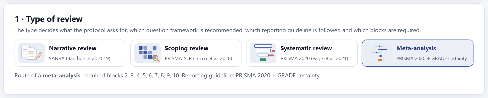
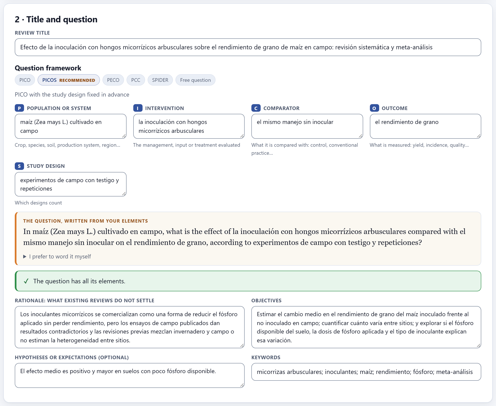
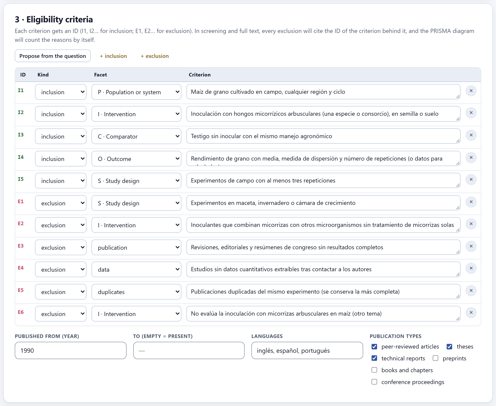
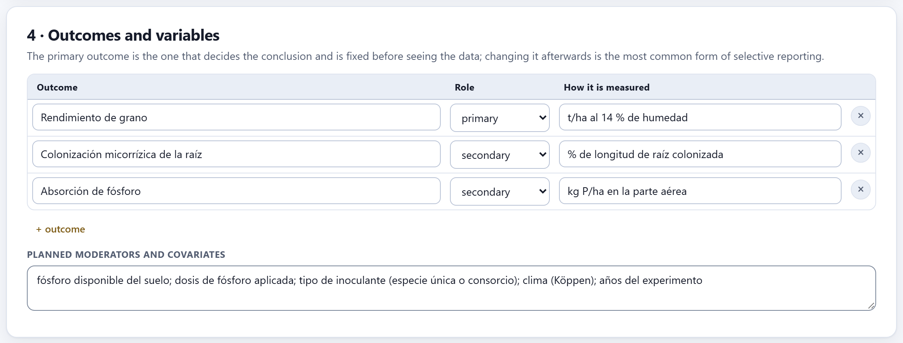
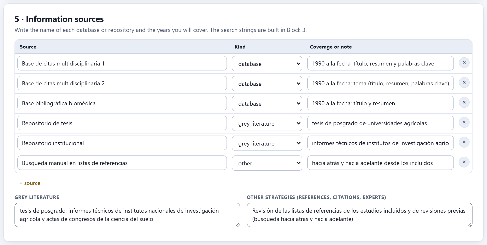
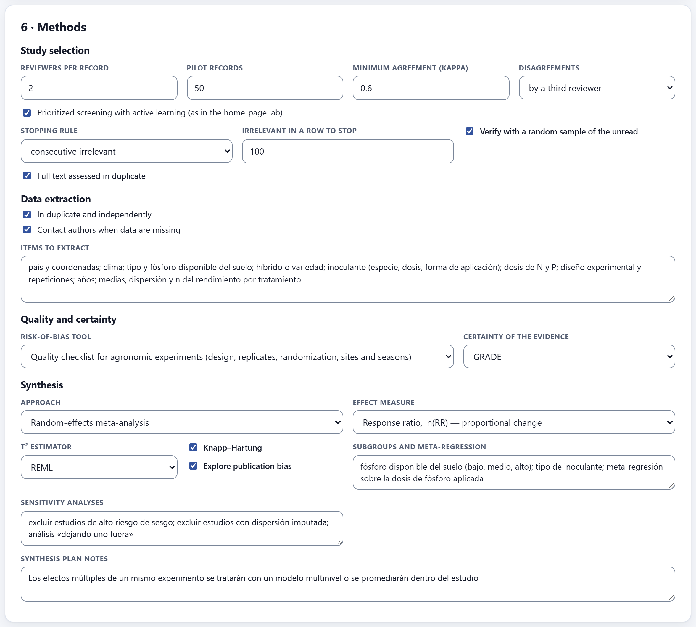
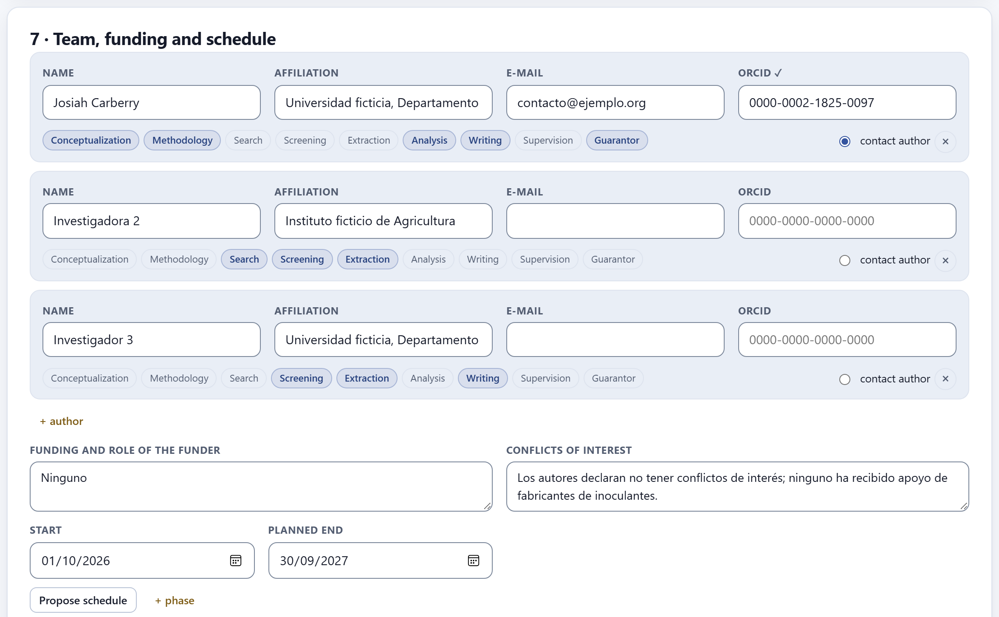
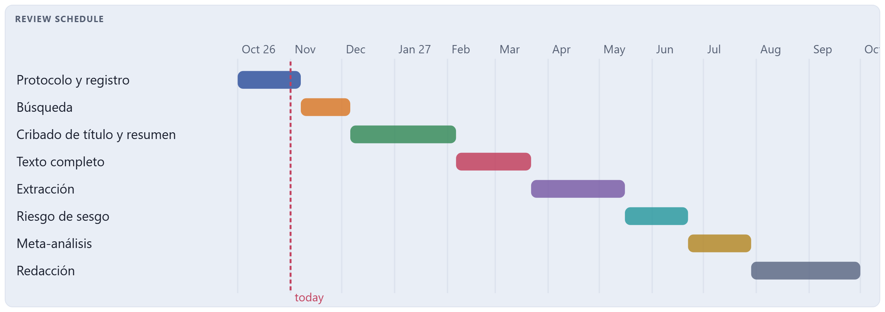
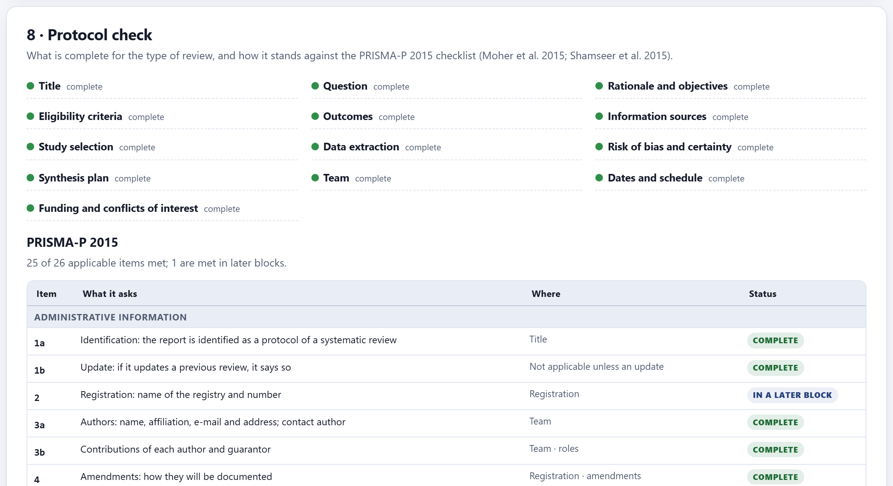
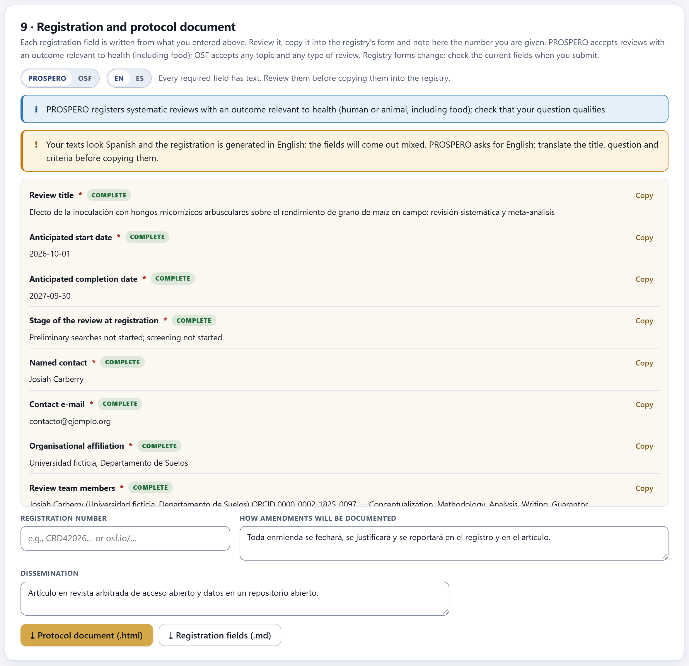

The protocol fixes the question, the criteria, the outcomes, the sources, the methods and who does what, before seeing a single result. It is what keeps the review from bending to what it finds. The block also saves and opens the project, checks the protocol against the PRISMA-P checklist, drafts the registration fields for PROSPERO or OSF and downloads the protocol document.
The first card of the block, Project (Figure I.2), handles the whole project, not just the protocol. Its colored bar measures how complete the protocol is—in the example, “100% of the protocol · 13 sections complete, 0 to review, 0 missing”—and on the right it says when it was last saved in the browser.
| Button | What it does |
|---|---|
| New | Starts an empty project of the same type as the open one. It asks for confirmation, because everything open is replaced: save it first. |
| Open file… | Opens a .reviewpro.json: yours from another session or a co-author’s. |
| ⤓ Save file | Downloads the complete project with the title as the file name. |
| Example · Load example | Fills only the protocol with one of three examples: Meta-analysis: mycorrhizae and maize, Scoping: agroecology in coffee or Narrative: mycorrhizae and phosphorus. They let you see a complete protocol of each type before writing yours. |
The project file is the way to work as a team: whoever writes the protocol saves it and shares it; whoever screens opens that copy. Each reviewer’s screening decisions, on the other hand, are exchanged with a file of their own from Block 4, so that each person screens blind on their own computer (Section 4.5).

This is the type that rules the whole project (Section 1.2). Changing it later is possible, but it has consequences: it changes the recommended question framework, the default bias tool, the synthesis approach, the manuscript skeleton and the reporting checklist. The data you have already entered are not lost.

The title should say what type of review it is (“systematic review and meta-analysis”, “scoping review”): PRISMA 2020 asks for it in its first item, and Block 9 checks it. Then you choose the question framework; the app marks the one that corresponds to the type as recommended.
| Framework | Elements | What for |
|---|---|---|
| PICO | Population or system · Intervention · Comparator · Outcome | Interventions and treatments: does it work, how much? |
| PICOS | PICO + Study design | PICO with the study design fixed in advance (recommended for meta-analysis) |
| PECO | Population or system · Exposure · Comparator · Outcome | Exposures that are not assigned: climate, pollution, observed management |
| PCC | Population · Concept · Context | Scoping reviews: mapping concepts in a context |
| SPIDER | Sample · Phenomenon of interest · Design · Evaluation · Research type | Qualitative or mixed-methods evidence |
| Free question | A single question written by hand | Narrative reviews |
Each element carries a reminder of what goes there. With them, the app writes the question in a box; if you prefer to write it yourself, open I prefer to word it myself and what you write replaces the drafted one. Below, a message checks the question: “The question has all its elements.”, or else what is missing or what does not fit the type.
| If a systematic review or a meta-analysis uses a free question or PCC | then the app asks for a focused question: PICO, PICOS, PECO or SPIDER. |
| If a meta-analysis has no comparator | then there is no effect to pool: define what it is measured against. |
| If a meta-analysis uses SPIDER | then the app warns that SPIDER is for qualitative evidence. |
| If a scoping review uses PICO | then it works if you already know which intervention to map; the usual choice is PCC. |
The rationale answers what existing reviews do not settle; the objectives, what will be estimated or mapped; the hypothesis is optional; the keywords are separated by semicolons. The elements of the question—not the keywords—seed the concept blocks of the search (Section 3.1).

The ID is not decoration: in screening and in full text, every exclusion is recorded with the ID of the criterion behind it, and the PRISMA diagram counts the reasons by itself. That is why each exclusion criterion should be a single one and verifiable: “experiments in pots, greenhouses or growth chambers” is decided by reading; “low-quality studies” is not.
| Propose from the question | Writes an inclusion criterion for each element of the question, plus the usual exclusions. It is a starting point: edit them. |
| + inclusion · + exclusion | Add a criterion; the ✕ removes it and the IDs are renumbered. |
| Facet | The element of the question (P, I, C, O, S…) or a general category: publication, data, duplicates. |
| Years, languages, publication types | The period (an empty final year means “to the present”), the accepted languages and which types count: peer-reviewed articles, theses, technical reports, preprints, books and chapters, conference proceedings. |
Leaving out theses, technical reports and conference abstracts excludes precisely the literature where null results hide, and increases the risk of publication bias that Block 8 will try to measure. If you decide to exclude them, write it down and justify it; if you include them, the search in Block 3 will have to go looking for them.

Each outcome carries its name, its role—primary or secondary—and how it is measured. The primary outcome decides the conclusion and is fixed before seeing the data; changing it afterward is the most common form of selective reporting. The names you write here come back in Block 6 (which outcome each effect belongs to) and in Block 7 (one GRADE row per outcome). The moderators are the variables with which you plan to explain the heterogeneity; declaring them here is what separates an exploration from a fishing expedition (Section 8.3).

The sources are listed by name, with their kind and the years you will cover; the kind decides in which column of the PRISMA diagram their records fall (databases and registers, or other methods). For that, the name you give each file imported in Block 3 must be the same as that of its source here; a file whose source is not on this list is counted as a database. The fields for grey literature and other strategies (reference lists, forward citations, consulting experts) complete item 7 of PRISMA-P. The strings are built in Block 3.

| Section | What is declared | Used by |
|---|---|---|
| Study selection | Reviewers per record, pilot size, minimum agreement (kappa), how disagreements are resolved (by discussion or by a third reviewer), whether screening is prioritized and with which stopping rule, whether it is verified with a sample of the unread records, and whether the full text is assessed in duplicate. | Blocks 4 and 5 |
| Data extraction | Whether it is done in duplicate and independently, whether authors will be contacted when data are missing, and the items to extract. | Block 6 |
| Quality and certainty | The risk-of-bias tool—the quality checklist for agronomic experiments, RoB 2, ROBINS-I, Newcastle–Ottawa, a checklist for qualitative studies or none—and whether certainty will be rated with GRADE. | Block 7 |
| Synthesis | The approach (thematic, charting tables, SWiM or meta-analysis), the effect measure, the τ² estimator, Knapp–Hartung, whether publication bias is explored, the subgroups, the sensitivity analyses and notes. | Blocks 6 and 8 |
| Effect measure | When |
|---|---|
| Response ratio, ln(RR) | Proportional change between means of the same positive variable (yield, biomass): the most commonly used in agronomy and ecology (Hedges et al. 1999). |
| Standardized mean difference (Hedges’ g) | Means on different scales across studies. |
| Mean difference | All studies in the same unit. |
| Risk ratio, odds ratio, risk difference | Counts: diseased and healthy plants, plots with and without damage. |
| Correlation (Fisher’s z) | Associations between two continuous variables. |

Each author carries a name, affiliation, e-mail and ORCID; the app validates the ORCID check digit and puts a ✓ when it is correct. The roles—conceptualization, methodology, search, screening, extraction, analysis, writing, supervision and guarantor—are marked with a click, and one of the authors is the contact author. Funding and conflicts of interest are always declared, even if “none”: PRISMA 2020 asks for them and the live data {{funding}} and {{coi}} of Block 9 copy them into the manuscript.
With the start and end dates, Propose schedule divides the time into phases with the typical proportions for the type of review—in a systematic review, for example, title and abstract screening takes about one sixth—and draws the bar chart. The phases and their dates can be edited by hand.


The card brings together two checks. At the top, each section the type of review asks for, with its status—complete, to review or missing—and, when something is missing, what to do (“Declare both, even if "none".”, “Explain why this review is needed (what existing ones do not settle).”). Below, the PRISMA-P 2015 checklist (Moher et al. 2015; Shamseer et al. 2015), item by item: what it asks, where in the protocol it is met and its status. Some items are met in later blocks—the registration number, for example, only exists after registering—and are marked as such, not as missing.

Each registration field is drafted from what you wrote above, with a Copy button to paste it into the registry’s form. You choose the registry—PROSPERO or OSF—and the language of the fields. The app warns about two things: the scope of each registry and whether your texts are in a language other than the registry’s.
| If the review is scoping or narrative | then OSF: PROSPERO does not register them. |
| If it is systematic with an outcome relevant to health (human or animal, including food) | then PROSPERO is an option; check that your question qualifies. |
| If it is systematic on an agronomic or environmental topic without a health outcome | then OSF, which registers any type of review on any topic. |
| If the registry asks for English and your protocol is in Spanish | then translate the title, the question and the criteria before copying them; the app does not translate your texts. |
Registry forms change: check the current fields at the time of submission.
When you register, note the registration number (for example, CRD42026… or osf.io/…): with it you meet item 2 of PRISMA-P, item 24a of PRISMA 2020 and the live datum {{reg}} of the manuscript. The amendments field says how changes will be documented; the dissemination field, where it will be published. ⤓ Protocol document (.html) downloads the complete protocol, ready to print or attach; ⤓ Registration fields (.md), the fields as text.
Those about the question framework (Section 2.3), those for each incomplete section (2.8) and those about registration (2.9). None of them stops you from moving on: the protocol can be amended, and a real review does so. What matters is that each change is dated and justified in the amendments field (How amendments will be documented) and reported in the article (item 24c of PRISMA 2020).